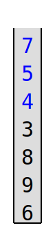
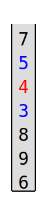
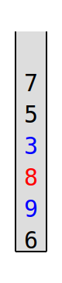
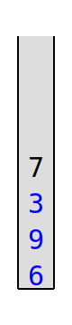
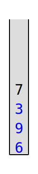
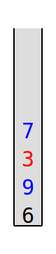
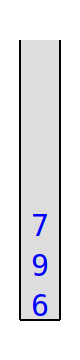
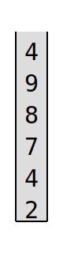
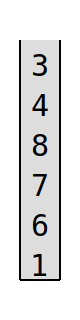

Révision Liste/Pile/File⚓︎
Crédits
- Crédit de la mise en pages des exercices : Gilles Lassus
- Sujet 2022, Centres étrangers, J1, Ex. 2 Mise en page par Franck Chambon
- Sujet 2022, Métropole, J1, Ex. 1 Mise en page et correction par Franck Chambon
- Sujet 2022, Polynésie, J1, Ex. 4 Mise en page et correction par Franck Chambon
- Sujet 2022, Métropole, J2, Ex. 2 Mise en page et correction par Nicolas Revéret
Passage automatique en caisse⚓︎
D'après 2022, Centres étrangers, J1, Ex. 2
Un supermarché met en place un système de passage automatique en caisse. Un client scanne les articles à l'aide d'un scanner de code-barres au fur et à mesure qu'il les ajoute dans son panier.
Les articles s'enregistrent alors dans une structure de données. La structure de données utilisée est une file définie par la classe Panier, avec les primitives habituelles sur la structure de file.
Pour faciliter la lecture, le code de la classe Panier n'est pas écrit.
class Panier():
def __init__(self):
"Initialise la file comme une file vide."
def est_vide(self):
"Renvoie True si la file est vide, False sinon."
def enfile(self, e):
"Ajoute l'élément e en dernière position de la file, ne renvoie rien."
def defile(self):
"Retire le premier élément de la file et le renvoie."
Le panier d'un client sera représenté par une file contenant les articles scannés.
Les articles sont représentés par des tuples (code_barre, designation, prix, horaire_scan) où
code_barreest un nombre entier identifiant l'article ;designationest une chaine de caractères qui pourra être affichée sur le ticket de caisse ;prixest un nombre décimal donnant le prix d'une unité de cet article ;horaire_scanest un nombre entier de secondes permettant de connaitre l'heure où l'article a été scanné.
1. On souhaite ajouter un article dont le tuple est le suivant (31002, "café noir", 1.50, 50525).
Écrire le code utilisant une des quatre méthodes ci-dessus permettant d'ajouter l'article à l'objet de classe Panier appelé panier_1.
Réponse
panier_1.enfile((31002, "café noir", 1.50, 50525))
2. On souhaite définir une méthode remplir de paramètre panier_temp dans la classe Panier permettant de transférer vers la file tout le contenu d'un autre panier panier_temp qui est aussi un objet de type Panier. Recopier et compléter le code de la méthode remplir.
def remplir(self, panier_temp):
while not panier_temp. ... :
article = panier_temp. ...
self. ... (article)
Réponse
def remplir(self, panier_temp):
while not panier_temp.est_vide():
article = panier_temp.defile()
self.enfile(article)
3. Pour que le client puisse connaitre à tout moment le montant de son panier, on souhaite ajouter une méthode prix_total (sans paramètres) à la classe Panier qui renvoie la somme des prix de tous les articles présents dans le panier.
Écrire le code de la méthode prix_total.
 Attention, après l'appel de cette méthode, le panier devra toujours contenir ses articles.
Attention, après l'appel de cette méthode, le panier devra toujours contenir ses articles.
Réponse
def prix_total(self):
cumul = 0
panier_temp = Panier()
while not self.est_vide():
article = self.defile()
code_barre, designation, prix, horaire_scan = article
# ou alors prix = article[2]
cumul += prix
panier_temp.enfile(article)
while not panier_temp.est_vide():
article = panier_temp.defile()
self.enfile(article)
return cumul
4. Le magasin souhaite connaitre pour chaque client la durée du passage en caisse. Cette durée sera obtenue en faisant la différence entre le champ horaire_scan du dernier article scanné et le champ horaire_scan du premier article scanné dans le panier du client. Un panier vide renverra une durée égale à None. On pourra accepter que le panier soit vide après l'appel de cette méthode.
Écrire une méthode duree_passage_en_caisse de la classe Panier qui renvoie cette durée.
Réponse
def duree_passage_en_caisse(self):
if self.est_vide():
return None
else:
article = self.defile()
code_barre, designation, prix, horaire_scan = article
h_mini = h_maxi = horaire_scan
while not self.est_vide():
article = self.defile()
code_barre, designation, prix, horaire_scan = article
if horaire_scan > h_maxi:
h_maxi = horaire_scan
if horaire_scan < h_mini:
h_mini = horaire_scan
return h_maxi - h_mini
Si on est certain que la file est dans l'ordre croissant des horaires de scan, on peut proposer le code plus simple
def duree_passage_en_caisse(self) :
if self.est_vide() :
return None
else :
article = self.defile()
debut = article[3]
while not self.est_vide() :
article = self.defile()
duree = article[3] - debut
return duree
Vérification syntaxique de parenthèses ou de balises⚓︎
D'après 2022, Métropole, J1, Ex. 1
Partie A : Expression correctement parenthésée⚓︎
On veut déterminer si une expression arithmétique est correctement parenthésée. À chaque parenthèse fermante ")" correspond une parenthèse précédemment ouverte "(".
Exemples
- L'expression arithmétique
"(2 + 3) × (18/(4 + 2))"est correctement parenthésée. - L'expression arithmétique
"(2 + 3) × (18/(4 + 2"est non correctement parenthésée.
Pour simplifier les expressions arithmétiques, on enregistre, dans une structure de données, uniquement les parenthèses dans leur ordre d'apparition. On appelle expression simplifiée cette structure.
| Expression arithmétique | Structure de données |
|---|---|
"(2 + 3) × (18/(4 + 2))" |
()(()) |
1. Indiquer si la phrase « les éléments sont maintenant retirés (pour être lus) de cette structure de données dans le même ordre qu'ils y ont été ajoutés lors de l'enregistrement » décrit le comportement d'une file ou d'une pile. Justifier.
Réponse
Le premier à être retiré était le premier à être ajouté, donc cela correspond à une file.
Pour vérifier le parenthésage, on peut utiliser une variable controleur qui :
- est un nombre entier égal à 0 en début d'analyse de l'expression simplifiée ;
- augmente de 1 si l'on rencontre une parenthèse ouvrante
"("; - diminue de 1 si l'on rencontre une parenthèse fermante
")".
Exemple
On considère l'expression simplifiée A : "()(())"
Lors de l'analyse de l'expression A, controleur (initialement égal à 0) prend successivement pour valeur 1, 0, 1, 2, 1, 0.
Le parenthésage est correct.
2. Écrire, pour chacune des 2 expressions simplifiées B et C suivantes, les valeurs successives prises par la variable controleur lors de leur analyse.
- Expression simplifiée B : " ((()()"
- Expression simplifiée C : "(()))("
Réponse
- Expression simplifiée B : 1, 2, 3, 2, 3, 2
- Expression simplifiée C : 1, 2, 1, 0, -1, 0
3. L'expression simplifiée B précédente est mal parenthésée (parenthèses fermantes manquantes) car le controleur est différent de zéro en fin d'analyse.
L'expression simplifiée C précédente est également mal parenthésée (parenthèse fermante sans parenthèse ouvrante) car le controleur prend une valeur strictement négative pendant l'analyse.
Recopier et compléter uniquement les lignes 13 et 16 du code ci-dessous pour que la fonction parenthesage_correct réponde à sa description.
| 🐍 Script Python | |
|---|---|
1 2 3 4 5 6 7 8 9 10 11 12 13 14 15 16 17 18 19 | |
Réponse
- ligne 13:
(controleur < 0) - ligne 16:
(controleur == 0)
Les parenthèses sont inutiles.
Partie B : Texte correctement balisé⚓︎
On peut faire l'analogie entre le texte simplifié des fichiers HTML (uniquement constitué de balises ouvrantes <nom> et fermantes </nom>) et les expressions parenthésées.
Par exemple, l'expression HTML simplifiée : "<p><strong><em></em></strong></p>" est correctement balisée.
On ne tiendra pas compte dans cette partie des balises ne comportant pas de fermeture comme <br> ou <img ...>.
Afin de vérifier qu'une expression HTML simplifiée est correctement balisée, on peut utiliser une pile (initialement vide) selon l'algorithme suivant :
-
On parcourt successivement chaque balise de l'expression :
- lorsque l'on rencontre une balise ouvrante, on l'empile ;
- lorsque l'on rencontre une balise fermante :
- si la pile est vide, alors l'analyse s'arrête : le balisage est incorrect,
- sinon, on dépile et on vérifie que les deux balises (la balise fermante rencontrée et la balise ouvrante dépilée) correspondent (c'est-à-dire ont le même nom) si ce n'est pas le cas, l'analyse s'arrête (balisage incorrect).
Exemple détaillé⚓︎
|
Étape 1
|
Étape 2
|
Étape 3
|
|
Balise `#!html ` ouvrante, on empile. |
Balise `#!html ` ouvrante, on empile. | Balise `#!html ` fermante, on dépile, mais... |
|
Pile
|
Pile
|
Pile
|
<em> et </p> ne correspondent pas !
Donc le balisage est incorrect.
4. Cette question traite de l'état de la pile lors du déroulement de l'algorithme.
4.a. Représenter la pile à chaque étape du déroulement de cet algorithme pour l'expression "<p><em></em></p>" (balisage correct).
Réponse
"<p><em></em></p>"
↑
=====
Pile"]
"<p><em></em></p>"
↑ Balise <p> ouvrante, on empile
<p>
=====
Pile"]
"<p><em></em></p>"
↑ Balise <em> ouvrante, on empile
<em>
<p>
=====
Pile"]
"<p><em></em></p>"
↑ Balise </em> fermante, on dépile
<p>
=====
Pile"]
<#!html em> et </em> se correspondent.
"<p><em></em></p>"
↑ Balise </p> fermante, on dépile
=====
Pile"]
<p> et </p> se correspondent.
"<p><em></em></p>"
↑
=====
Pile"]
La pile est vide. Le balisage est correct.
4.b. Indiquer quelle condition simple (sur le contenu de la pile) permet alors de dire que le balisage est correct lorsque toute l'expression HTML simplifiée a été entièrement parcourue, sans que l'analyse ne s'arrête.
Réponse
Il suffirait de vérifier que la pile est vide.
5. Une expression HTML correctement balisée contient 12 balises.
Indiquer le nombre d'éléments que pourrait contenir au maximum la pile lors de son analyse.
Réponse
6 éléments au maximum seront empilés, dans le cas où 12 balises HTML sont imbriquées. 6 ouvrantes qui seront empilées, puis les 6 fermantes.
Traitement d'une pile⚓︎
D'après 2022, Polynésie, J1, Ex. 4
La classe Pile utilisée dans cet exercice est implémentée en utilisant des listes Python et propose quatre éléments d'interface :
- Un constructeur qui permet de créer une pile vide, représentée par
[]; - La méthode
est_vide()qui renvoieTruesi l'objet est une pile ne contenant aucun élément, etFalsesinon ; - La méthode
empilequi prend un objet quelconque en paramètre et ajoute cet objet au sommet de la pile. Dans la représentation de la pile dans la console, cet objet apparait à droite des autres éléments de la pile ; - La méthode
depilequi renvoie l'objet présent au sommet de la pile et le retire de la pile.
Exemples :
>>> ma_pile = Pile()
>>> ma_pile.empile(2)
>>> ma_pile
[2]
>>> ma_pile.empile(3)
>>> ma_pile.empile(50)
>>> ma_pile
[2, 3, 50]
>>> ma_pile.depile()
50
>>> ma_pile
[2, 3]
La méthode est_triee ci-dessous renvoie True si, en dépilant tous les éléments, ils sont traités dans l'ordre croissant, et False sinon.
| 🐍 Script Python | |
|---|---|
1 2 3 4 5 6 7 8 9 | |
1. Recopier sur la copie les lignes 6 et 8 en complétant les points de suspension.
Réponse
| 🐍 Script Python | |
|---|---|
1 2 3 4 5 6 7 8 9 | |
On crée dans la console la pile A représentée par [1, 2, 3, 4].
2.a. Donner la valeur renvoyée par l'appel A.est_triee().
Réponse
La valeur \(4\) est d'abord dépilée, puis \(3\). L'ordre n'est pas croissant, ainsi A.est_triee() renvoie False.
2.b. Donner le contenu de la pile A après l'exécution de cette instruction.
Réponse
A sera représenté par [1, 2].
On souhaite maintenant écrire le code d'une méthode depile_max d'une pile non vide ne contenant que des nombres entiers et renvoyant le plus grand élément de cette pile en le retirant de la pile.
Après l'exécution de p.depile_max(), le nombre d'éléments de la pile p diminue donc de 1.
| 🐍 Script Python | |
|---|---|
1 2 3 4 5 6 7 8 9 10 11 12 13 14 | |
3. Recopier sur la copie les lignes 9 et 11 en complétant les points de suspension.
Réponse
| 🐍 Script Python | |
|---|---|
1 2 3 4 5 6 7 8 9 10 11 12 13 14 | |
On crée la pile B représentée par [9, -7, 8, 12, 4] et on effectue l'appel B.depile_max().
4.a. Donner le contenu des piles B et q à la fin de chaque itération de la boucle while de la ligne 5.
Réponse
Bcontient[9, -7, 8, 12];qest vide ;maxiest égal à4.
Juste avant le premier tour de boucle
Bcontient[9, -7, 8];qcontient[4];maxiest égal à12.
Bcontient[9, -7];qcontient[4, 8];maxiest égal à12.
Bcontient[9];qcontient[4, 8, -7];maxiest égal à12.
Best vide ;qcontient[4, 8, -7, 9];maxiest égal à12.
4.b. Donner le contenu des piles B et q avant l'exécution de la ligne 14.
Réponse
La dernière boucle renverse la pile q dans la pile B, ainsi, à la ligne 14 :
qest vide ;Bcontient[9, -7, 8, 4].
4.c. Donner un exemple de pile qui montre que l'ordre des éléments restants n'est pas préservé après l'exécution de depile_max.
Réponse
Avec une pile B qui contient [3, 1, 2]
Bcontient[3, 1];qest vide ;maxiest égal à2.
Juste avant le premier tour de boucle
Bcontient[3];qcontient[1];maxiest égal à2.
Best vide ;qcontient[1, 2];maxiest égal à3.
La dernière boucle renverse la pile q dans la pile B, ainsi, à la ligne 14 :
qest vide ;Bcontient[2, 1].
Sans 3 dans la pile B initiale, on a dans l'ordre [1, 2] ce qui est différent de [2, 1] obtenu ici avec depile_max.
On a ainsi un exemple où l'ordre des éléments restants n'est pas préservé après l'exécution de depile_max.
On donne le code de la fonction traite :
| 🐍 Script Python | |
|---|---|
1 2 3 4 5 6 | |
5.a. Donner les contenus successifs des piles B et q
- avant la ligne 3,
- avant la ligne 5,
- à la fin de l'exécution de la fonction
traitelorsque la fonctiontraiteest appelée avec la pileBcontenant[1, 6, 4, 3, 7, 2].
Réponse
Avec B = [1, 6, 4, 3, 7, 2], un appel B.traite() conduit successivement à :
- Avant la ligne 3,
Bcontient[1, 6, 4, 3, 7, 2];qest vide.
- Avant la ligne 5,
Best vide ;qcontient[7, 6, 4, 3, 2, 1]
- À la fin,
Bcontient[1, 2, 3, 4, 6, 7]qest vide.
5.b. Expliquer le traitement effectué par cette méthode.
Réponse
Ce traitement est un tri de la pile. On construit d'abord q comme la pile des éléments de self dans l'ordre décroissant. On renverse ensuite la pile, qui se retrouve comme si on avait empilé les éléments de self dans l'ordre croissant.
Attention, il s'agit de l'ordre inverse de celui proposé par la fonction est_triee vu à la question 1. ici, si on dépile les éléments, ils sont désormais dans l'ordre décroissant.
Jeu de la poussette⚓︎
D'après 2022, Métropole, J2, Ex. 2
La poussette est un jeu de cartes en solitaire. Cet exercice propose une version simplifiée de ce jeu basée sur des nombres.
On considère une pile constituée de nombres entiers tirés aléatoirement. Le jeu consiste à réduire la pile suivant la règle suivante : quand la pile contient du haut vers le bas un triplet dont les termes du haut et du bas sont de même parité, on supprime l'élément central.
Par exemple :
- Si la pile contient du haut vers le bas le triplet 1 ; 0 ; 3, on supprime le 0, car 1 et 3 sont tous les deux impairs.
- Si la pile contient du haut vers le bas le triplet 1 ; 0 ; 8, la pile reste inchangée, car 1 et 8 n'ont pas la même parité.
On parcourt la pile ainsi de haut en bas et on procède aux réductions.
Arrivé en bas de la pile, on recommence la réduction en repartant du sommet de la pile jusqu'à ce que la pile ne soit plus réductible.
Une partie est « gagnante » lorsque la pile finale est réduite à deux éléments exactement.
Voici un exemple détaillé de déroulement d'une partie.




- La première comparaison (7, 5 et 4) laisse la pile inchangée.
- On retire le 4 lors de la deuxième itération.
- On retire le 8 lors de la troisième.
- Il ne reste plus que deux valeurs en bas de la pile (9 et 6) : on a fini le premier parcours.
 


- On recommence à partir du haut de la pile : on retire le 5.
- Le triplet suivant (3, 9 et 6) n'entraine pas de suppression.
- Il ne reste plus que deux valeurs à étudier (9 et 6) : on a terminé le deuxième parcours.


- On recommence en haut de la pile avec 7, 3 et 9 : on retire le 3.
- Il ne reste que le 9 et le 6 : on a terminé le troisième parcours.

- On recommence en haut de la pile avec 7, 9 et 6. La pile est inchangée.
- La pile n'a pas été modifiée lors de ce parcours : la partie est terminée et cette pile n'est pas gagnante.
1.a. Donner les différentes étapes de réduction de la pile suivante :

Réponse
Il s'agit d'une pile gagnante :


- Lors de la première comparaison, on retire le 9.
- Lors de la seconde comparaison, on retire le 7.
- Il ne reste plus que deux valeurs en bas de la pile (4 et 2) : on a fini le premier parcours.


- Lors de la première comparaison, on retire le 8.
- Lors de la seconde comparaison, on retire le 4.
- Il ne reste plus que deux valeurs en bas de la pile (4 et 2) : la pile est gagnante.
1.b. Parmi les piles proposées ci-dessous, donner celle qui est gagnante.



Réponse
Seule la pile B est gagnante. On fournit ci dessous les piles en début et fin de partie :


L'interface d'une pile est proposée ci-dessous :
pile_vide()renvoie une pile vide,est_vide(p)renvoieTruesipest vide,Falsesinon,empile(p, element)ajouteelementau sommet dep,depile(p)retire l'élément au sommet depet le renvoie,sommet(p)renvoie l'élément au sommet depsans le retirer dep,taille(p):renvoie le nombre d'éléments dep.
Dans la suite de l'exercice on utilisera uniquement ces fonctions.
2. La fonction reduit_triplet_au_sommet permet de supprimer l'élément central des trois premiers éléments en partant du haut de la pile, si l'élément du bas et du haut sont de même parité. Les éléments dépilés et non supprimés sont replacés dans le bon ordre dans la pile.
Recopier et compléter sur la copie le code de la fonction reduit_triplet_au_sommet prenant une pile p en paramètre et la
modifiant en place. Cette fonction renvoie le booléen est_reduit indiquant si le triplet du sommet a été réduit ou non.
| 🐍 Script Python | |
|---|---|
1 2 3 4 5 6 7 8 9 10 | |
Réponse
| 🐍 Script Python | |
|---|---|
1 2 3 4 5 6 7 8 9 10 | |
3. On se propose maintenant d'écrire une fonction parcourt_pile_en_reduisant qui parcourt la pile du haut vers le bas en procédant aux réductions pour chaque triplet rencontré quand cela est possible.
La pile est toujours modifiée en place.
La fonction parcourt_pile_en_reduisant renvoie un booléen indiquant si la pile a été réduite à au moins une reprise lors du parcours.
3.a. Donner la taille minimale que doit avoir une pile pour être réductible.
Résultat
Si une pile a une taille de 2 ou moins, elle n'est pas réductible.
Si une pile est réductible, alors sa taille est supérieure ou égale à 3.
3.b. Recopier et compléter sur la copie :
| 🐍 Script Python | |
|---|---|
1 2 3 4 5 6 7 8 9 10 11 12 | |
Résultat
| 🐍 Script Python | |
|---|---|
1 2 3 4 5 6 7 8 9 10 11 12 | |
4. Partant d'une pile d'entiers p, on propose ici d'implémenter une fonction récursive joue jouant une partie complète sur la pile p.
On effectue donc autant de parcours que nécessaire.
Une fois la pile parcourue de haut en bas, on effectue un nouveau parcours à condition que le parcours précédent ait modifié la pile. Si à l'inverse, la pile n'a pas été modifiée, on ne fait rien, car la partie est terminée.
| 🐍 Script Python | |
|---|---|
1 2 3 | |
Résultat
| 🐍 Script Python | |
|---|---|
1 2 3 | |